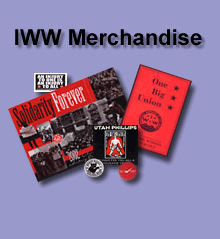

Submitted on Wed, 11/12/2008 - 9:27pm

Fellow Workers:
It is with great enthusiasm that I would like to announce the launch of the new IWW Literature Department Website at
http://store.iww.org!
This project has been under development for some time, but now our online store has been streamlined and is chock full of sweet IWW goodies including many fine books about the IWW, featuring literature written by members, as well as many tittles about the Labor Movement in general.
We now have over 200 items listed, with more items still going up. This is the perfect place to get a copy of the brand new Wobblies
& Zapatistas, Labor Law for the Rank and Filer, or that IWW t-shirt
that you have always wanted!
But, even better, for the rest of the month of November, we will celebrate the launch of the new website by offering a coupon for 10% off any order over $20.00! Use coupon code Remember when checking out, because in November we Remember all of the other workers who fought so hard for us in the past...
Please forward this on to family and friends, and anyone who loves the
IWW!
So, go on over to
HTTP://STORE.IWW.ORG today and get 10% off your entire order of $20.00 or more with coupon code Remember
Walt Weber
Philadelphia IWW Branch Secretary
Chair IAC
walt.weber.iww [at] gmail.com
Submitted on Mon, 10/27/2008 - 8:52pm
Contact: starbucksunion (at) yahoo.com
October 27, 2008
Starbucks Management Conference in New Orleans Hit with Unexpected Union
Protest
Supporters of the IWW Starbucks Workers Union Took the Streets in an
Energetic Display of Solidarity
New Orleans, LA- Starbucks Coffee Co.'s first national conference for
managers held outside of Seattle and the first since the return of Howard
Schultz as CEO, was rocked by a determined pro-worker demonstration here
yesterday. In the midst of a worsening economic crisis, New Orleans residents
rose up to demand respect for the work of Starbucks baristas and coffee farmers
who are bearing the brunt of the downturn while company executives continue to
rake in millions of dollars.
Submitted on Mon, 10/13/2008 - 8:52pm
Contact: press (at) brandworkers.org
October 13, 2008
Rev. Billy and Pastor Mansfield Visit New York City Wine & Food
Festival to Protest Chef Terrance Brennan
New Voices Add Support to the Campaign for Worker Dignity at Wild Edibles,
Inc.
New York, NY- Reverend Billy, a nationally-respected advocate for
responsible consumption and Pastor Jeff Mansfield, a leading voice for food
justice at Judson Memorial Church, joined with Wild Edibles workers and their
supporters this weekend to protest chef and restaurant owner Terrance Brennan at
the New York City Wine & Food Festival. Brennan's Artisanal Bistro lied in
writing by stating that it was no longer serving seafood processed by the Wild
Edibles sweatshop when it in fact did continue to serve Wild Edibles
products.
"Mr. Brennan, honor your word," exclaimed Rev. Billy into a megaphone
during a sidewalk sermon in front of the food festival panel featuring Terrance
Brennan. "[The Wild Edibles workers] don't want to work in a sweatshop. Even
celebrity chefs have to do the right thing."
Submitted on Wed, 10/08/2008 - 8:52pm
By DANIEL GROSS - Counterpunch, October 8, 2008
A peaceful union march is brutally attacked by police. A union activist’s
leg is horribly disfigured and nearly amputated. Maimed possibly for
life, she is charged with multiple felony offenses.
The
battleground is not the coalfields of Harlan County in the 1930s or
1970s; it's not an example of anti-union violence in Colombia or the
Philippines. Our setting is present day Providence, Rhode Island.
On
that brilliant Saturday, August 11 of 2007, Alexandra Svoboda didn’t do
what she was supposed to do. She didn’t stay home and watch TV. She
didn’t go shop at her local Wal-Mart. She didn’t waste away hours on
MySpace.
Submitted on Sat, 10/04/2008 - 11:46pm
 Headlines:
Headlines:
- Ward's Market fires IWW members
- Toronto radio station fires staff while bargaining
- Quebec workers get union contract at Wal-Mart
- Sweatfree Communities press state governors
Features:
- General Assembly in Europe an IWW first
- Remembering Helen Keller as a fighter
- Youth must organize at school and work to win power
- UK inquiry reveals chronic neglect led to death
Download a free PDF copy of this issue.